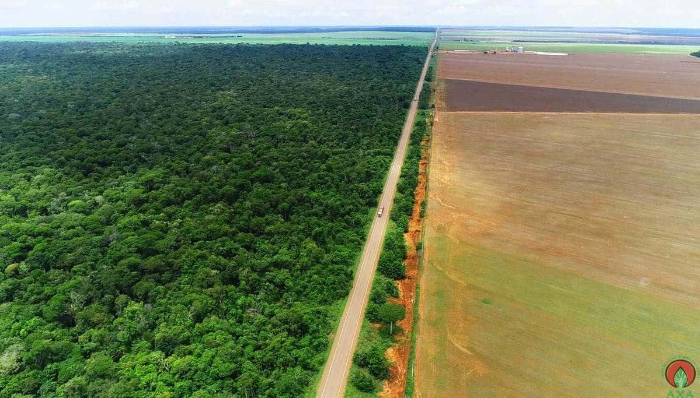
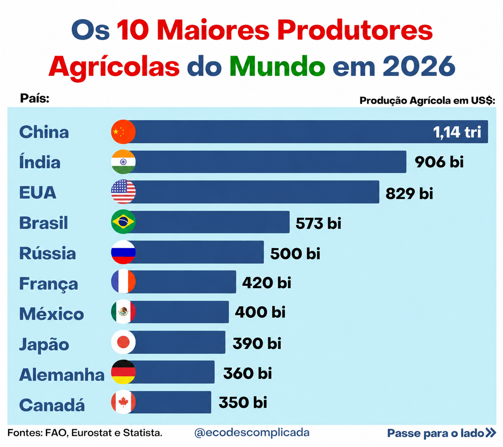
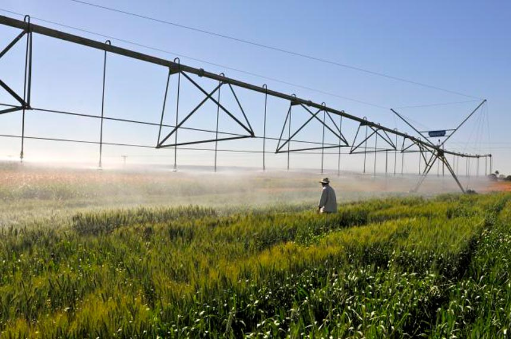
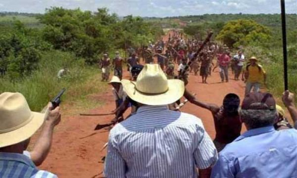
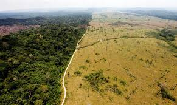
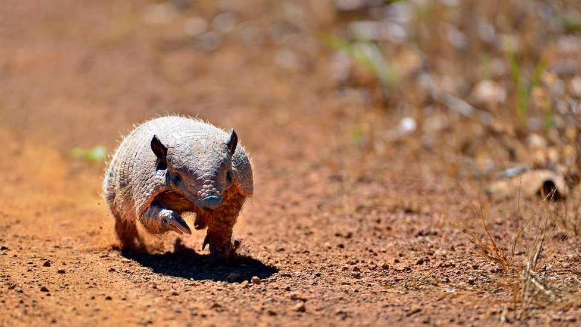
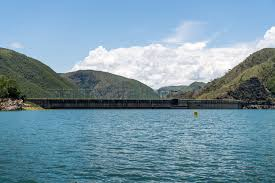
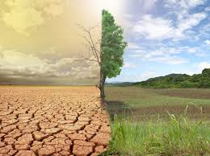
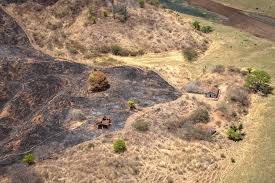

O avanço das atividades agropecuárias impulsiona a economia brasileira, mas também gera conflitos sociais, concentração fundiária e impactos ambientais.

Nas últimas décadas, o Brasil consolidou sua posição como uma das maiores potências agrícolas do mundo.
O crescimento da produção ampliou a participação do país no comércio internacional e fortaleceu o agronegócio.
Entretanto, esse avanço também trouxe desafios ambientais e sociais que exigem atenção.


A fronteira agrícola corresponde às áreas ocupadas por atividades agrícolas e pecuárias.
O aumento da demanda mundial por alimentos impulsionou a abertura de novas áreas.
Apesar dos benefícios econômicos, esse crescimento pode provocar impactos ambientais relevantes.
Grande parte das terras produtivas está concentrada nas mãos de poucos proprietários.
O acesso limitado à terra dificulta o crescimento de pequenos produtores.
O problema tem origem histórica e continua presente na estrutura agrária brasileira.
A disputa por áreas produtivas gera conflitos entre agricultores, povos indígenas e grandes proprietários.
Em muitas regiões, essas disputas afetam comunidades tradicionais.
A regularização fundiária é apontada como uma importante solução.


A retirada da vegetação reduz a biodiversidade e altera ecossistemas.

A destruição dos habitats ameaça inúmeras espécies animais.

O uso inadequado do solo prejudica rios e nascentes.

O aumento das emissões intensifica eventos climáticos extremos.

O uso excessivo do solo favorece processos de desertificação.
A degradação reduz a fertilidade do terreno e prejudica a produção agrícola.
Técnicas sustentáveis ajudam a preservar áreas produtivas.
Recuperação de áreas degradadas e proteção de nascentes.
Produção com menor impacto ambiental e maior eficiência.
Combate ao desmatamento ilegal e proteção ambiental.
Conscientização sobre o uso responsável dos recursos naturais.
O desenvolvimento agrícola deve caminhar junto com a preservação ambiental. Somente com planejamento e responsabilidade será possível garantir crescimento econômico sustentável para as futuras gerações.